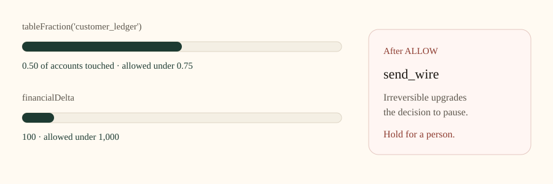

Lesson 04

Shadow execution produces a diff: rows changed, schema changes, and a money total. Rules are expressions that must return a boolean. Anything else denies. An evaluation error denies. The demo manifest carries two rules.
tableFraction('customer_ledger') <= 0.75 onFail DENY
financialDelta <= 1000 onFail DENY
tableFraction is changed rows divided by the previous row count, with a floor of one row. A missing table contributes zero. financialDelta sums absolute money movements. On the in-memory ledger, only balance decreases count, so a transfer is not added twice. schemaChanged(table) and rowDelta(table) are also available. Builtins are abs, len, str, and coalesce. && and || short-circuit. Division uses scale 8, half up.
If any rule denies, the transaction compensates and ends ROLLED_BACK with AtpPolicyDenied. A person is not asked to override a deny. If every rule allows and a step is IRREVERSIBLE, the engine still parks the transaction in ESCALATED_HITL with hold APPROVAL_IRREVERSIBLE. A rule with onFail: PAUSE parks with APPROVAL_POLICY when it fails and nothing denied.
The snapshot is already on the write-ahead log. The HTTP request that paused has finished. Hours later:
{"jsonrpc":"2.0","id":1,"method":"tx/resume",
"params":{"txId":"ui-wire-2","decision":"APPROVE"},
"_meta":{
"io.modelcontextprotocol/protocolVersion":"2026-07-28",
"io.modelcontextprotocol/clientCapabilities":{}
}}
APPROVE is valid for an approval hold and moves the transaction into COMMITTING.REJECT is valid for an approval hold and starts compensation.RETRY is valid for an unknown outcome or a failed compensation, not for an approval hold.Abort of a terminal transaction returns the snapshot. Abort of an unknown outcome or an orphaned irreversible effect refuses to guess: the engine will not invent a success or a rollback.
Irreversible steps are deferred until reversible work has committed, unless a reversible step depends on the irreversible one. If the wire commits and a later step fails, rollback marks the live wire ORPHAN and seals ESCALATED_HITL with AtpIrreversibleBlocked. That is the honest outcome. There is no inverse for money that already left.